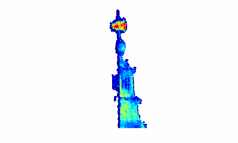
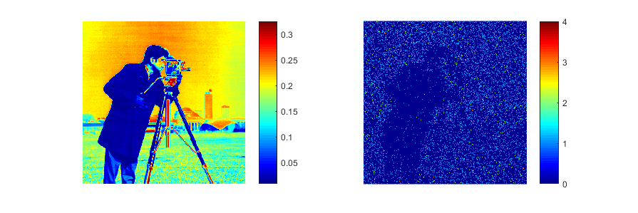

3D reconstruction using single-photon Lidar

We are working in new algorithms capable of performing 3D reconstruction using single-photon Lidar data. This task becomes very challenging when the acquisition time is very low, as only a few photons are collected and standard methods do not work.
Compressive Multispectral 3D reconstruction
Using multispectral Lidar data (MSL)

Bayesian restoration of photon-starved images

Photon-limited imaging arises in many applications where the light flux changes rapidly or is extremely limited. Photon count measurements generally follow Poisson statistics, which vary significantly from the ones corrupted by Gaussian noise, yielding poor results if Gaussian restoration methods are directly applied. We studied many state-of-the-art MCMC samplers to perform this task following a Bayesian approach.